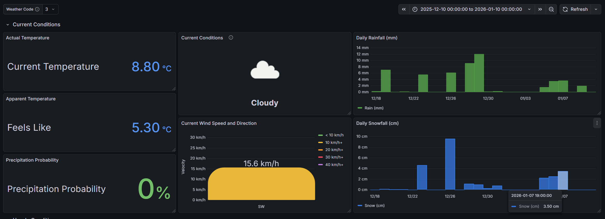
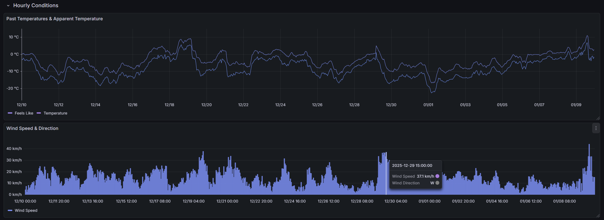
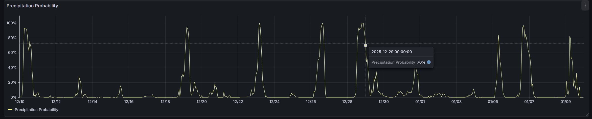
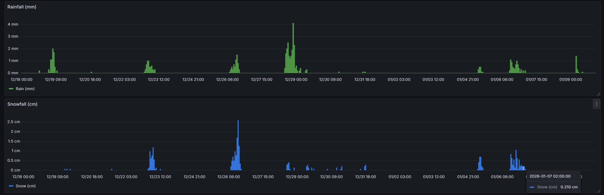
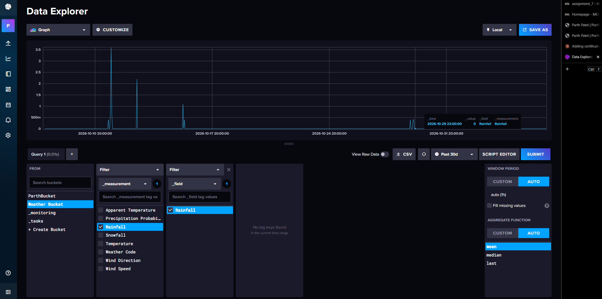

Weather Dashboard
Overview
A weather monitoring dashboard built with Grafana and backed by an InfluxDB time-series database. Weather readings are stored in an InfluxDB bucket and visualized in Grafana, showing current conditions alongside historical rainfall, snowfall, temperature, and wind trends.
Highlights
- Stored weather data in an InfluxDB bucket with fields for temperature, apparent temperature, precipitation probability, rainfall, snowfall, wind speed, wind direction, and weather code.
- Built a Grafana dashboard with a current conditions section: actual and "feels like" temperature, precipitation probability, a weather condition icon, and live wind speed and direction.
- Created historical panels for daily rainfall and snowfall, along with past temperature and wind trends over a selectable time range.
- Used dashboard variables and time range controls so the same panels can be reused across different periods and weather codes.
How It Works
1. Store
Weather measurements are written to an InfluxDB bucket as time-series fields.
2. Query
InfluxDB's Data Explorer was used to build and test queries against each field before wiring them into panels.
3. Visualize
Grafana panels display current conditions and historical trends in one dashboard.
Technologies
Gallery




